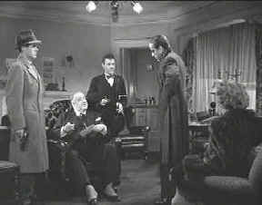

|
Maltese
Falcon, The(SE)A,B+ |
|
Warner/1941/100m/FS
1.33 BW
|
After
watching the one hundred perfect minutes of The Maltese
Falcon with a smile on my face, I thought I might have had
lock-jaw. The polished gem of Dashiell Hammett's pulp detective
novel never fails to delight. Every character, from detective
Sam Spade to gunsel Wilmer Cook is a precious stone.
|
 |
| All
the usual suspects. ©Warner |
|
The Feature
Archive has articles ranging from John
Ford to Blonde
Bimbos, Akira
Kurosawa and Frank
Darabont.

Click on the image above to access The
Heistmasters, a view of the best directors of the heist.
Check out the Movie
Poster Archive for short bios and images of
Susan Hayward, Kirk Douglas, Katharine Hepburn and many more.
This month's featured star is Cary
Grant.

DVD Verdict
They
may be judgmental, but that's the point, isn't it. Lots of DVD
reviews plus news and more.
Click on the link to visit the judge's chambers.
Home
Theater Reference Reviewing System

When you read a DVD review it's of utmost importance to
know what equipment is being used to evaluate quality. Click on
the projector to find out more.
 Direct
from the corridors of the Home Theater Forum, Home Theater Talk
is the newest place on the Net to discuss everything home
theater. Friendly atmosphere and knowledgeable folks are the
secret ingredients. Direct
from the corridors of the Home Theater Forum, Home Theater Talk
is the newest place on the Net to discuss everything home
theater. Friendly atmosphere and knowledgeable folks are the
secret ingredients.
Imaging
Science Foundation
The Imaging Science Foundation promotes
proper standards in home theater viewing. ISF trained
technicians offer monitor calibration services to consumers. The
difference in a properly calibrated monitor can be
astounding. Click on the image to find an ISF member near you.
|